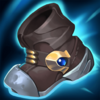

Mago
Dificultad Alta
HABILIDADES


PASIVA • CENTRO DEL UNIVERSO
Las estrellas orbitan alrededor de Aurelion Sol e infligen daño mágico al alcanzar a un enemigo.
1 • EXPLOSIÓN ASTRAL
Aurelion Sol crea un disco expansivo que explota para aturdir e infligir daño a los enemigos cuando se aleja demasiado de él.
2 • EXPANSIÓN CELESTIAL
Aurelion Sol desplaza sus estrellas aún más lejos y aumenta su daño y velocidad.
3 • COMETA LEGENDARIO
Aurelion Sol despega y vuela una larga distancia.
DEFINITIVA • VOZ DE LUZ
Aurelion Sol proyecta una ráfaga de fuego estelar puro, lo que inflige daño y ralentiza a todos los enemigos atrapados en ella y lanza hacia atrás a los enemigos cercanos a una distancia más segura.
CONFIGURACIÓN
OBJETOS
-

Vara de las Edades
2800+250 Vida Máxima
+60 Poder de Habilidad
+300 Maná Máximo
ETERNIDAD: Restaura maná igual al 15% del daño recibido de campeones. Gastar maná regenera Vida igual al 20% del costo de maná. Tiene un límite de 25 de Vida por cada lanzamiento.
VETERANO: Cada acumulación otorga 20 de Vida, 10 de Maná y 6 de Poder de Habilidad. Se acumula con una tasa de 1 cada 30 seg. Tiene un máx. de 10 acumulaciones y otorga 200 de Vida, 100 de Maná y 60 de Poder de Habilidad. -
Cetro de Crital de Rylai
2700+350 Vida Máxima
+70 Poder de Habilidad
GÉLIDO: Las habilidades activas que inflijan daño y los ataques potenciados ralentizan a los enemigos un 20% durante 1 seg.
-

Sombrero Mortífero de Rabadon
3500+120 Poder de Habilidad
DAÑO EXCESIVO: Aumenta el Poder de Habilidad en un 40%.
-

Báculo del Vacío
2800+70 Poder de Habilidad
DISOLVER: +40% de Penetración de Magia.
-

Orbe del Infinito
3150+200 Vida Máxima
+60 Poder de Habilidad
DESTINO: +5% de Velocidad de Movimiento.
BALANCE: +15% de Penetración de Magia.
MUERTE INEVITABLE: Las habilidades y los ataques potenciados infligen golpes críticos con un 20% de daño adicional contra enemigos por debajo del 35% de Vida. -

Botas de Mercurio
1000CALZADO: +40 de Velocidad de Movimiento.
MEJORADO: +10 de Resistencia Mágica.
TENACIDAD: Reduce la duración de aturdimientos, ralentizaciones, provocaciones, miedo, silencio, ceguera e inmovilizaciones un 35%.
CARRERA (ACTIVA): Aumenta la Velocidad de Movimiento un 15% durante 3 seg. Infligir o recibir daño de campeones desactiva los efectos de Carrera. (60 seg de enfriamiento). -

Encantamiento de Estasis
800ESTASIS (ACTIVA): Te vuelves invulnerable e inalcanzable durante 2.5 seg, pero no puedes moverte, atacar, lanzar habilidades ni utilizar objetos. (120 seg de enfriamiento).
RUNAS Y HECHIZOS
-

Conquistador
Obtienes acumulaciones de fuerza adaptable al atacar a un campeón con habilidades o ataques separados. Se acumula hasta 5 veces. Al alcanzar el máximo de acumulaciones, inflige daño adaptable adicional a campeones.
POR ACUMULACIÓN: 2 - 6 de Daño de Ataque adicional o 3 - 9 de Poder de Habilidad durante 6 seg.
EFECTO ADICIONAL CON EL MÁXIMO DE ACUMULACIONES: Cuerpo a cuerpo: 10% | A distancia: 7% de daño adaptable adicional a campeones. -

Brutalidad
Obtienes 7 de Daño de Ataque y un 2% de Penetración de Armadura o 14 de Poder de Habilidad y un 2% de Penetración de Magia (adaptable).
-

Segundo Aire
Gana 5 de Vida cada 5 seg.
Después de recibir daño de un campeón enemigo, regenera 3(+1.5% de tu Vida faltante) a lo largo de los próximos 10 seg. Este efecto se duplica para campeones cuerpo a cuerpo. -

Dulces Frutos
Aumenta la curación de Frutamiel en un 25%. Cada vez que tú o un aliado cercano coma una Frutamiel, obtienes 20 de oro.
-

Barrera
ENFRIAMIENTO: 120 seg.
Obtienes un escudo que absorbe 115 de daño (115-465) durante 2 seg. -

Destello
ENFRIAMIENTO: 150 seg.
Te teletransportas una distancia corta hacia delante o hacia la dirección objetivo.
CÓMO JUGAR AURELION SOL
Aurelion Sol es un mago del carril medio. En la fase de carriles, es un campeón un poco débil antes de que llegues al nivel 3. Una vez que Aurelion Sol alcance el nivel 3 y más, puedes usar su loco potencial de deambular con Cometa Legendario (tercera habilidad) para obtener ventajas en otros carriles. Una cosa importante a tener en cuenta es que cuando deambulas con la tercera habilidad de Aurelion Sol, puedes combinarla con tu Oleada de estrellas (primera habilidad). Cuanto más viaje con la primera habilidad de Aurelion Sol, más grande será el área, por lo que será más difícil para los enemigos esquivarla. Una vez que llegas a la mitad o al final del juego y tienes tus 3 elementos básicos con Aurelion Sol, realmente se conecta y puede causar mucho daño y tener muchas ralentizaciones para ayudar a tu equipo.